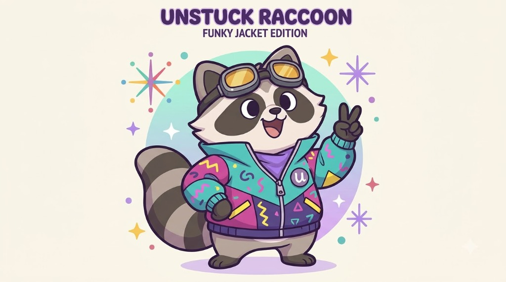

Your Focus Companion.
Not Another Task Manager.
You don't need a smarter task slicer. You need a teammate that sits with you, helps you start, reminds you to drink water, and celebrates every little win.

😊Built for how ADHD brains work.
No complex Kanban boards or rigid routines you abandon by day 3.
Flexible Focus Modes
Some days you need a 2-minute tiny start to beat paralysis. Other days you hyperfocus for 50 uninterrupted minutes. UnStuck supports Tiny Sprints (5m), Classic Pomodoro (25/5), Deep Work (50m), and Open Flow with session extensions.
"Take Care of Me" Reminders
ADHD brains easily forget physical bodies during deep flow. Our customizable, non-intrusive nudges gently remind you to drink water, take eye rests, and stretch without shaming you or disrupting your focus.
Zero-Shame Mascot Growth
We removed punishing streaks and replaced them with dopamine-rich comeback rewards. Your companion evolves and unlocks accessories as you complete sessions. Missed a week? Welcome back with open arms, zero guilt.
Take UnStuck Everywhere.
Native companion experience on Android and iOS. Direct download, zero ads, no subscription gates.
Android App (v1.0.0)
Full Jetpack Compose companion UI, floating mascot, custom Pomodoro timer presets, and "+5m Flow" hyperfocus extensions.
⬇️ Download Android APK (v1.0.0 Debug • 11 MB)📋 How to Install on Android in 4 Steps:
-
1. Tap "Download Android APK" above
Your browser downloads
UnStuck-FocusFlow.apkdirectly. -
2. Tap "Download anyway"
If Android warns "File might be harmful", tap Download anyway (standard prompt for APKs outside Google Play).
-
3. Allow unknown sources
Tap the downloaded file. When prompted "For security, your phone is not allowed to install unknown apps", tap Settings and switch on "Allow from this source".
-
4. Tap Install & Launch!
Tap Install on the system prompt, then open the app. Your companion is ready!
iOS App (Instant Install)
Add directly to your Home Screen with zero App Store lag, full offline caching, and fullscreen companion view.
🚀 Open Web App in Safari (Instant 10-second home screen install)📋 How to Add to iOS Home Screen:
-
1. Open UnStuck in Safari
Open
focusflowin Safari on your iPhone or iPad, or tap the button above. -
2. Tap the Share button
In Safari's bottom toolbar, tap the Share icon (square with upward arrow).
-
3. Select "Add to Home Screen"
Scroll down the share sheet and tap "Add to Home Screen" (➕).
-
4. Tap "Add" (Top Right)
UnStuck instantly appears on your iOS home screen as a standalone, fullscreen app with the mascot icon!
Native iOS SwiftUI project available in repo at ios/FocusFlow.xcodeproj. Open in Xcode and press Run (⌘R) to test on device or simulator.
Start your first supported session in 30 seconds.
The full web experience is completely free. Plan with your companion, run Pomodoro sessions, and build focus momentum today.